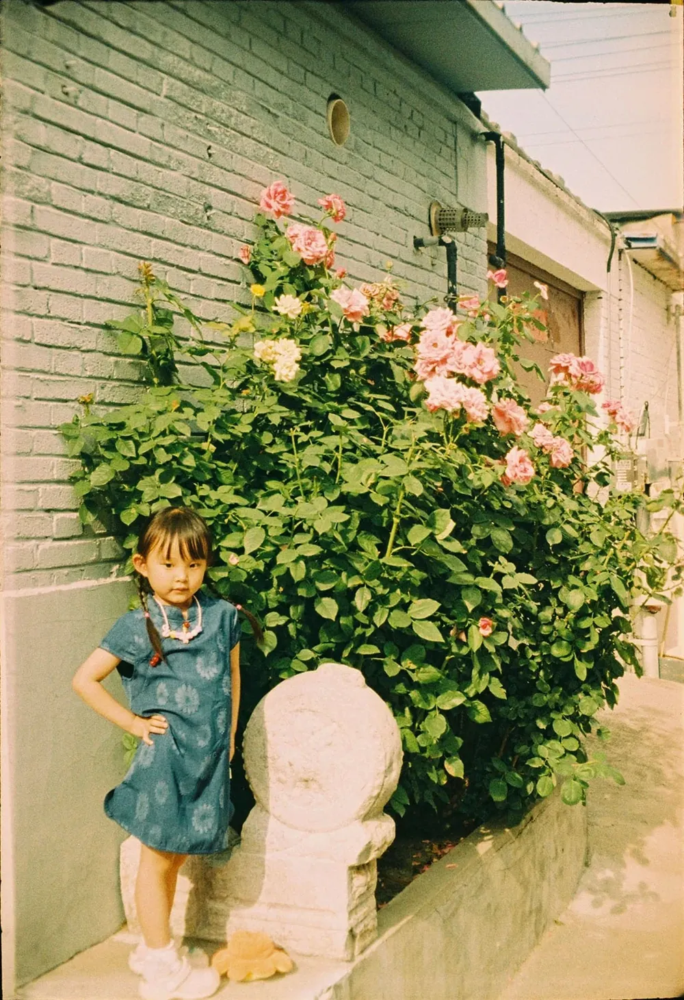
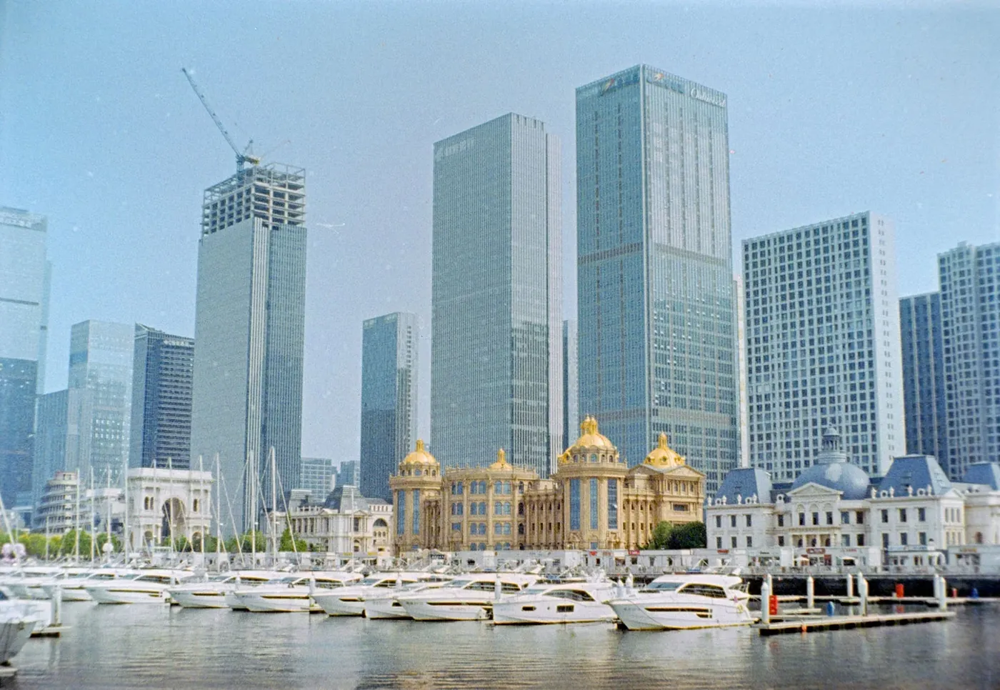
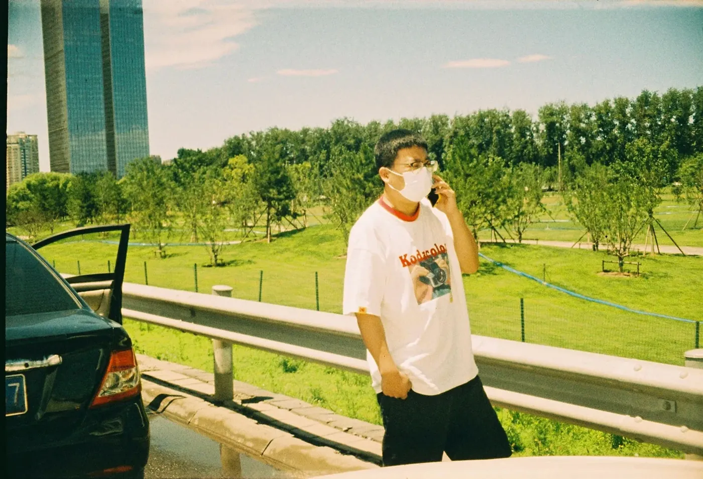
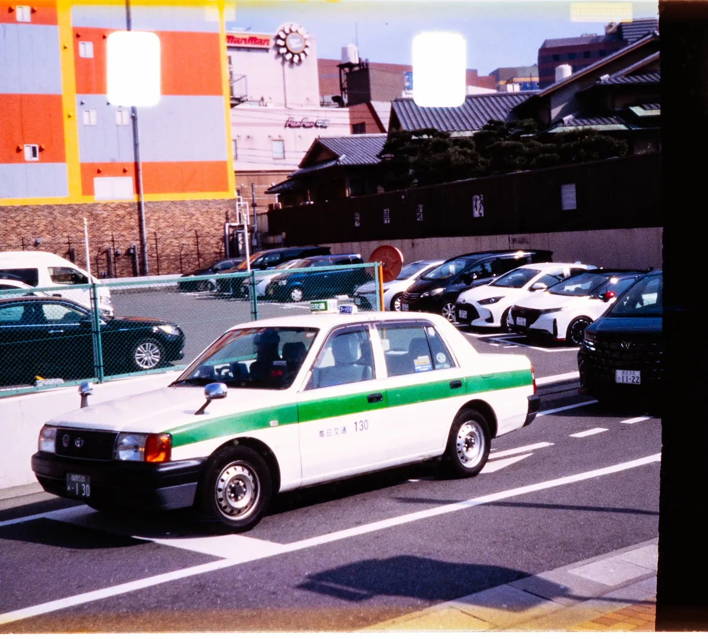
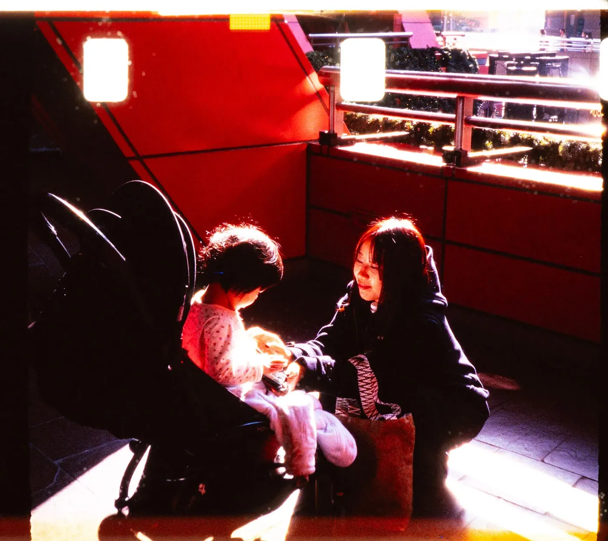
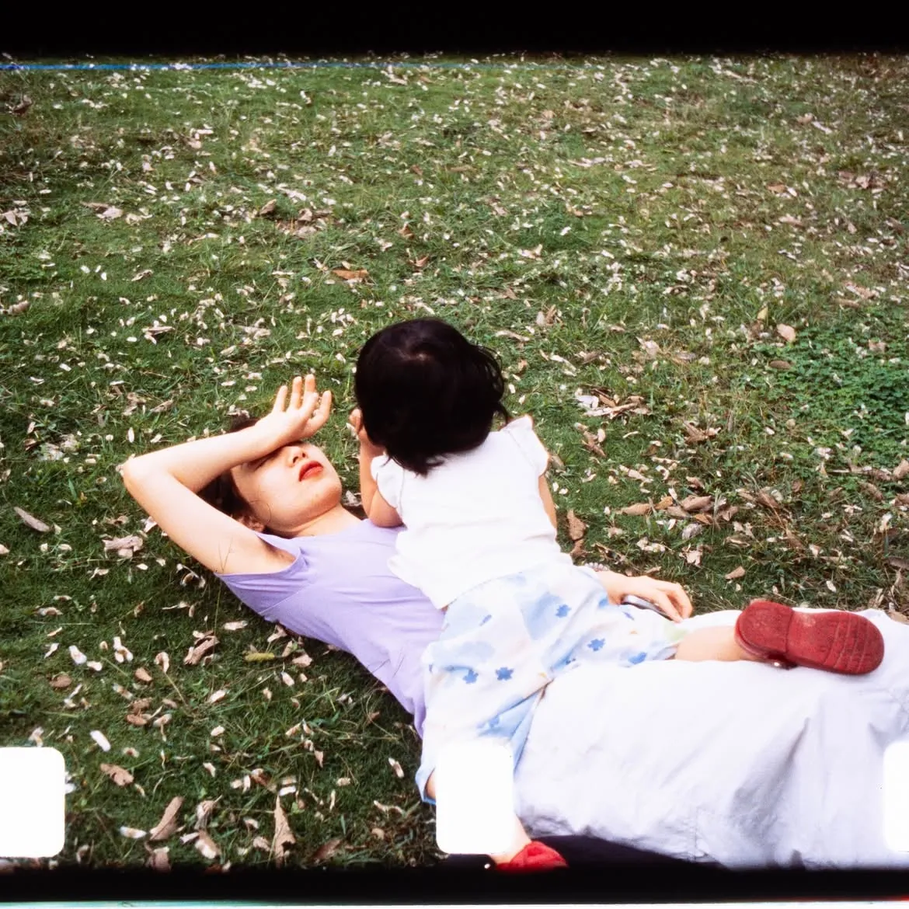

"110 필름 만드는 곳이 하나에서 셋으로 늘었다. 이 바닥에선 이게 사건이다."
110은 1970년대에 코닥이 내놓은 초소형 포맷이다. 네거티브 한 컷이 13×17mm, 정말 손톱만 하다. 한동안 명맥이 끊겼다가 로모그래피(Lomography)가 되살려 겨우 이어 왔는데, 사실상 그 한 곳이 전부였다. 거기에 필름 리스풀로 이름난 Reflx Lab이 두 종을 더했으니, 만드는 곳이 하나에서 셋이 됐다. 말 그대로 시장이 두 배 넘게 커진 셈이다.
시작이 좀 엉뚱하다. Reflx는 또 다른 단종 포맷인 127을 만들다가 곁가지로 110을 얻었다고 한다. 공동창업자 융샹(Yongxiang)은 코스모 포토에 "일종의 행복한 우연"이라고 했다. 카트리지는 Reflx가 3D 프린트로 직접 찍어 냈고, 한 통에 24컷이 담긴다.
Fortuna C200 — 데일리 컬러 네거티브

Fortuna C200은 중국 Lucky C200 컬러 네거티브를 110 카트리지에 되감은 필름이다. ISO 200에 C-41 현상. 색이 튀지 않고 순해서 일상 스냅에 잘 맞는다. 다만 13×17mm짜리 손톱만 한 네거티브다 보니 35mm보다 입자가 굵고 디테일은 부드럽게 풀린다. 흠이라기보다 110이라는 포맷의 질감 그 자체다.


100R — 손톱만 한 슬라이드

100R은 좀 더 별나다. 16mm 엑타크롬(Ektachrome) 무비 필름을 110에 되감은 컬러 리버설(슬라이드)이다. 110으로 슬라이드를 찍는다는 것 자체가 흔치 않은 일이다. ISO 100에 E-6 현상이고, 엑타크롬답게 맑고 쨍한 채도에 대비가 단단하다. 값은 Fortuna보다 조금 비싼 US$24.99. 슬라이드(E-6) 현상을 받아주는 곳을 미리 확인해 두는 게 좋다.


누가 쓰면 좋을까
둘 다 표준 110 카트리지라 펜탁스 오토 110이나 로모그래피 110 카메라에 그대로 들어간다. 서랍에서 잠자던 초소형 카메라를 다시 꺼낼 핑계가 하나 더 생긴 셈이다. 손톱만 한 네거티브 특유의 굵은 입자와 무른 디테일은 선명함을 좇는 사람에겐 약점이겠지만, 작고 가벼운 카메라로 툭툭 찍는 재미를 아는 사람에겐 바로 그게 매력이다.
대단한 신기술은 아니다. 그래도 하나뿐이던 포맷에 고를 거리가 생겼고, 심지어 110으로 슬라이드까지 찍을 수 있게 됐다. 여름에 오토 110 하나 챙겨 나갈 이유로는 이 정도면 충분하지 않을까.